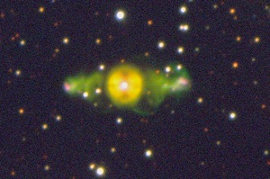

ETHOS 1
ETHOS 1
Narrow-band images of 300 second duration each were obtained with the FORS2 instrument attached to ESO’s Very Large Telescope in Paranal, Chile, on 19 June 2010 (H Alpha+83 - red, OIII+50 - green, and OII+44 filters - blue).
The full TIFF file is here.
Credit and Copyright: B. Miszalski, R. Corradi, H. Boffin et al.
Very Large Telescope image of ETHOS 1

This page created by Henri Boffin on 15 December 2010.